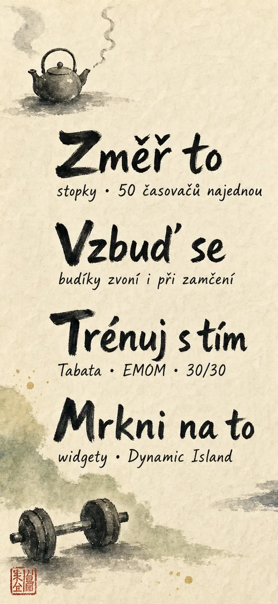
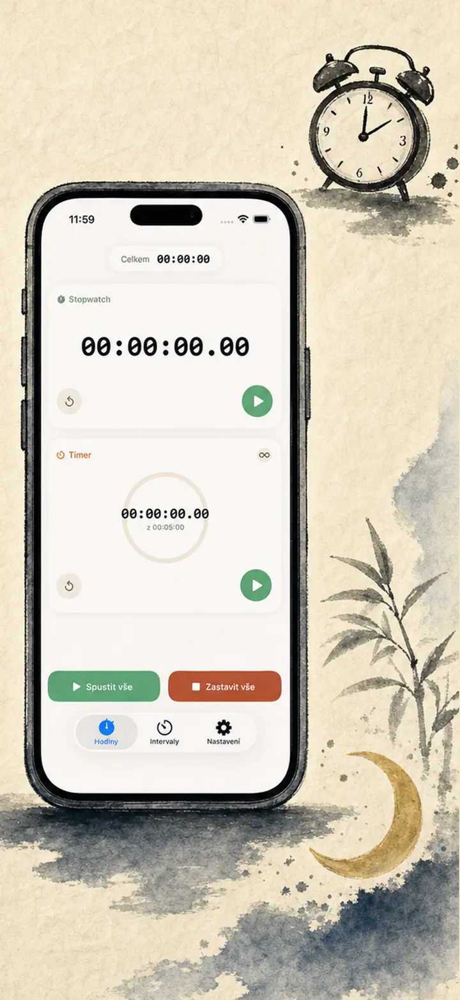
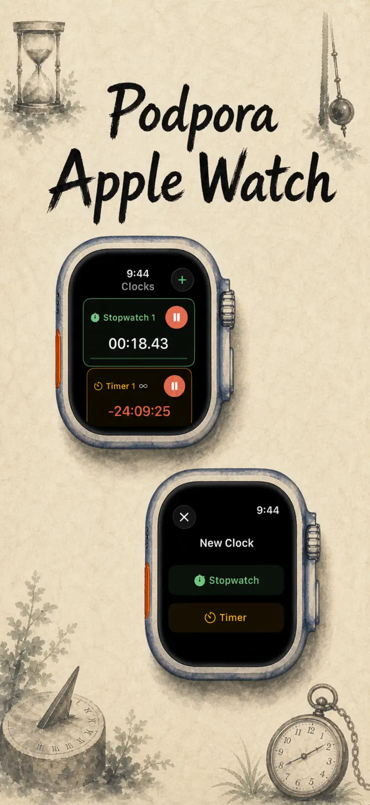
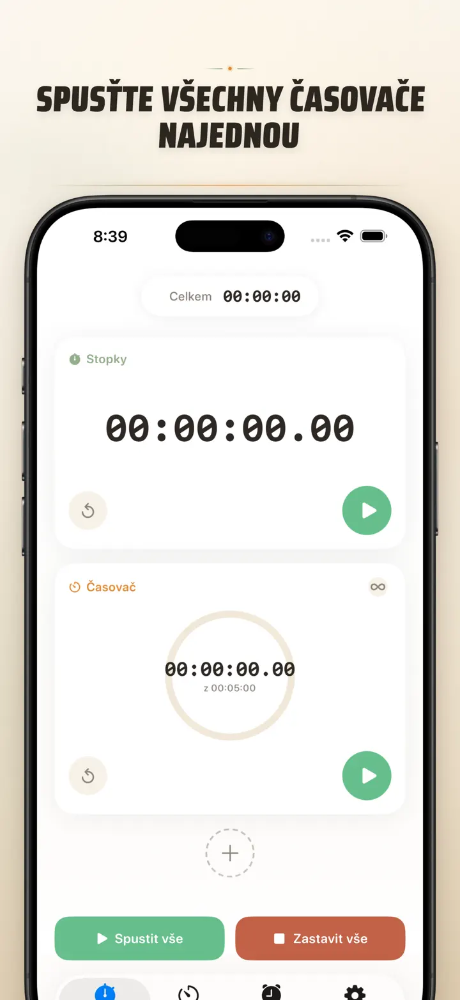
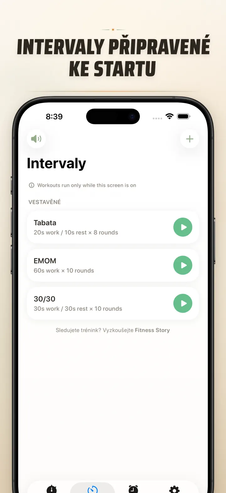
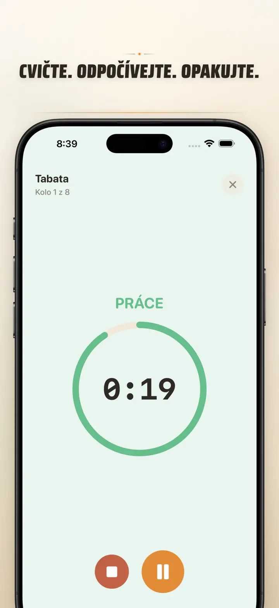
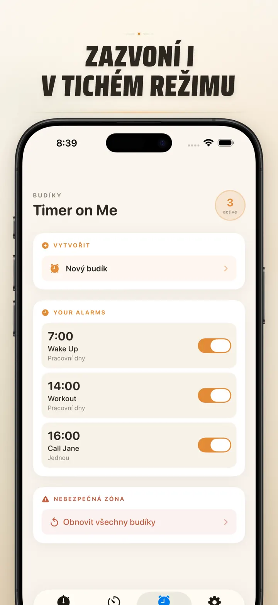

Timer on Me
Časovač, budík, stopky & HIIT
Nově s budíky s datem: jednorázový budík na libovolné datum a čas, vedle opakujících se budíků, 50 časovačů najednou, HIIT & Tabata a Apple Watch.
Stáhnout v App Storu
O aplikaci
Timer on Me je tvůj multi-časovač a stopky pro iPhone, iPad a Apple Watch. Až 50 nezávislých časovačů najednou, přesné intervalové tréninky a budíky, které opravdu zvoní — i při zamčeném iPhonu nebo zavřené aplikaci.
BUDÍKY
- Buzení a připomínky s vlastními názvy a rozvrhy pro dny v týdnu
- Pohání AlarmKit — zvoní i při zamčeném iPhonu nebo zavřeném Timer on Me
- Nastavitelná odložená budík (3 / 5 / 9 / 15 / 30 minut) nebo bez odložení
- Vyber si z vestavěných tónů nebo importuj vlastní zvuky
- Zapínání a vypínání jedním klepnutím v dedikované záložce Budíky
TRÉNINK A INTERVALY
- Hotové presety Tabata, EMOM a 30/30 — dvě klepnutí a jedeš
- Vlastní editor intervalů: práce, pauza a kola v minutách a sekundách
- Celoobrazovkový režim tréninku se změnou barvy pro každou fázi a tichým režimem
- Pauza, přeskočení a pokračování uprostřed sezení bez ztráty postupu
APPLE WATCH
- Skutečná nativní aplikace watchOS, ne jen zrcadlení z telefonu
- Víc stopek a časovačů běžících na zápěstí současně
- Stopky s přesností na setiny sekundy
- Vlastní komplikace ciferníku pro spuštění jedním klepnutím
- Funguje samostatně, i když iPhone není poblíž
50 ČASOVAČŮ NAJEDNOU
- Až 50 nezávislých časovačů a stopek v jedné relaci
- Spouštěj, zastavuj a nuluj jednotlivě nebo ve skupinách
- Automatické opakování pro cyklická kola
- Časovače pokračují i po nule pro sledování přesčasu
- Barevné ukazatele postupu: žlutá na 50 %, červená na 10 %
- Přetáhni pro seřazení, pojmenuj po svém
SPOLEHLIVÁ UPOZORNĚNÍ
- AlarmKit: budíky zvoní, i když je iPhone zamčený nebo aplikace zavřená
- Dynamic Island a Live Activity — postup na jediný pohled
- Widgety domovské obrazovky: malý, střední, velký
- Vestavěné tóny: zvonky, ptačí zpěv, vintage telefony
- Klepni pro poslech před výběrem
- Režim „Udržet obrazovku rozsvícenou" pro dlouhé sezení
PŘIZPŮSOB SI A SDÍLEJ
- Ukaž nebo skryj desetinná místa, součty a procenta
- Ulož a přepiš presety, vrať je jedním klepnutím
- Exportuj jako CSV, JSON nebo prostý text
- Sdílej s kolegy, studenty nebo trenérem
PRO iPhone, iPad A APPLE WATCH
- Rozvržení přizpůsobivé každé obrazovce
- Split View na iPadu
- 34 jazyků
IDEÁLNÍ PRO
- HIIT, Tabata, CrossFit a kruhový trénink
- Kola boxu, kickboxu a bojových sportů
- Pomodoro, maturita, přijímačky a soustředění
- Vaření kávy, čaje, vajíček, guláše, knedlíků a časy v troubě
- Jógu, pilates, meditaci a dechová cvičení
- Zkoušky prezentací a cvičení na nástroj
- Hodiny, workshopy a skupinové aktivity
- Deskové hry a večery s přáteli
Stáhni si Timer on Me a vezmi každou minutu pod kontrolu — v posilovně, v práci nebo doma.
Zásady ochrany osobních údajů: https://masawata.net/privacy-policy.html Podmínky služby: https://www.apple.com/legal/internet-services/itunes/dev/stdeula/
Snímky obrazovky






Timer on Me
Nově s budíky s datem: jednorázový budík na libovolné datum a čas, vedle opakujících se budíků, 50 časovačů najednou, HIIT & Tabata a Apple Watch.
Stáhnout v App Storu